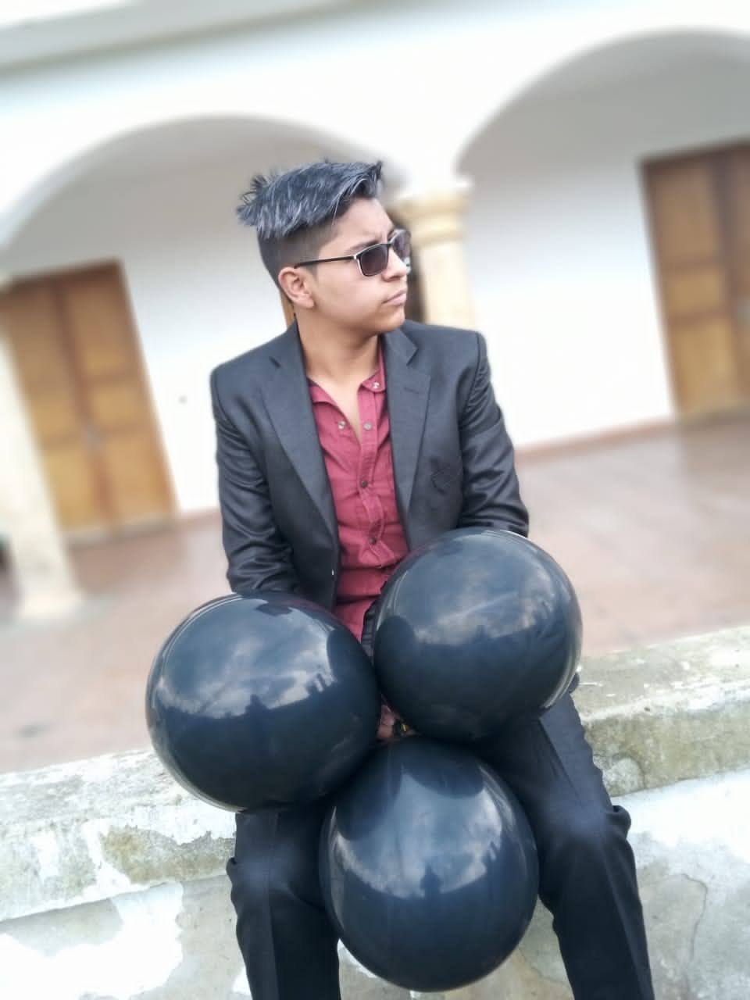

¡Hola a todos!
Me llamo Johan mas conocido como Stick Code y me apasiona el mundo
de la tecnología y la programación.
Desde muy joven, he estado inmerso en el fascinante universo
del desarrollo de software y la innovación tecnológica.
Una de mis grandes pasiones es explorar nuevas tecnologías y
aprender sobre diferentes lenguajes de programación.
¡Hola! Soy Johan Stiven Arateco, y mi fascinación por la tecnología y el desarrollo de software ha sido una constante en mi vida desde que tengo memoria. Nací el 16 de marzo de 2005 en la ciudad de Facatativá, ubicada en el departamento de Cundinamarca, Colombia, y desde entonces, he estado profundamente arraigado en el emocionante mundo de la innovación tecnológica.
Me gradué como técnico en automatización en el Colegio Juan Luis Londoño de la Cuesta, donde adquirí una sólida base en sistemas automatizados. Luego, continué mi formación en el Instituto SENA, obteniendo el título como técnico en Programación de Software, donde me sumergí en una variedad de lenguajes de programación y metodologías de desarrollo.
Una de mis mayores pasiones es explorar nuevas tecnologías y aprender sobre diferentes lenguajes de programación. Trabajo constantemente en mantener mi página web actualizada con mis proyectos personales y colaborativos. Mi marca, Stick Code, representa mi compromiso con la excelencia y la innovación en el campo de la programación.
Además de mi trabajo técnico, me concentro en construir una presencia significativa en línea. Utilizo las redes sociales como una plataforma para compartir conocimientos, experiencias y proyectos con otros entusiastas de la tecnología. Mi objetivo es inspirar a otros y fomentar una comunidad de aprendizaje colaborativo.
Con una sólida base técnica, una mentalidad innovadora y un compromiso inquebrantable con la excelencia, estoy emocionado de dejar mi huella en el mundo del desarrollo de software y la tecnología.
Me gradué como técnico en automatización en el Colegio Juan Luis Londoño de la Cuesta, donde adquirí una sólida base en sistemas automatizados. Luego, continué mi formación en el Instituto SENA, obteniendo el título como técnico en Programación de Software, donde me sumergí en una variedad de lenguajes de programación y metodologías de desarrollo.
Una de mis mayores pasiones es explorar nuevas tecnologías y aprender sobre diferentes lenguajes de programación. Trabajo constantemente en mantener mi página web actualizada con mis proyectos personales y colaborativos. Mi marca, Stick Code, representa mi compromiso con la excelencia y la innovación en el campo de la programación.
Además de mi trabajo técnico, me concentro en construir una presencia significativa en línea. Utilizo las redes sociales como una plataforma para compartir conocimientos, experiencias y proyectos con otros entusiastas de la tecnología. Mi objetivo es inspirar a otros y fomentar una comunidad de aprendizaje colaborativo.
Con una sólida base técnica, una mentalidad innovadora y un compromiso inquebrantable con la excelencia, estoy emocionado de dejar mi huella en el mundo del desarrollo de software y la tecnología.